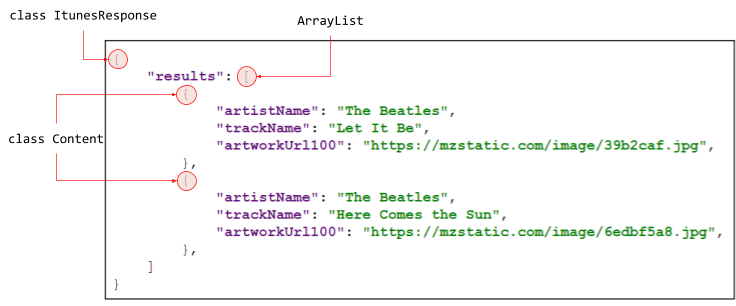

El objetivo de esta práctica es aprender a usar las librerías Retrofit y Glide.
La librería
La librería
Desarrollaremos una App que buscará un término en la API de iTunes y mostrará el contenido encontrado.
https://github.com/gerardfp/retrofit

Dependencias
Añade las librerías
implementation 'com.squareup.retrofit2:retrofit:2.6.2' implementation 'com.squareup.retrofit2:converter-gson:2.6.2' implementation 'com.github.bumptech.glide:glide:4.10.0' annotationProcessor 'com.github.bumptech.glide:compiler:4.10.0'
La respuesta de la llamada a la API
*Únicamente tenemos que tener en cuenta los datos de interés para nuestra app
{ "results": [ { "artistName": "The Beatles", "trackName": "Let It Be", "artworkUrl100": "https://mzstatic.com/image/39b2caf.jpg", }, { "artistName": "The Beatles", "trackName": "Here Comes the Sun", "artworkUrl100": "https://mzstatic.com/image/6edbf5a8.jpg", }, ] }
La respuesta es un objeto que contiene las siguientes variables:
results de tipoArrayList
Cada elemento del ArrayList
artistName de tipoString trackName de tipoString artworkUrl100 de tipoString
Así pues podemos modelar estos objetos con las siguientes clases:
public class ItunesResponse { public List<Content> results; }
public class Content { public String artistName; public String trackName; public String artworkUrl100; }
A la hora de modelar un JSON, la regla a seguir es:
Por cada

Definimos las llamadas a la API en un Interface
import retrofit2.Call; import retrofit2.http.GET; import retrofit2.http.Query; public interface ItunesApi { @GET("search/") Call<ItunesResponse> buscar(@Query("term") String term); }
Retrofit transformará cada llamada al método
Con la anotación
La anotación
Por ejemplo, si efectuamos la llamada
La siguiente clase ItunesApiModule es la que genera la implementación del interfaz ItunesApi que hemos definido anteriormente.
- Se especifica la URL Base
https://itunes.apple.com/ - Se añade el conversor Gson, que será el encargado de parsear el JSON que devulve iTunes y convertirlo en objetos de las clases que hemos definido (
ItunesResponse yContent )
import retrofit2.Retrofit; import retrofit2.converter.gson.GsonConverterFactory; public class ItunesApiModule { public static ItunesApi itunesApi = new Retrofit.Builder() .baseUrl("https://itunes.apple.com/") .addConverterFactory(GsonConverterFactory.create()) .build() .create(ItunesApi.class); }
El objeto
Opcional
Con el fin de debuggear la app, y ver en el Logcat las llamadas que se realicen a la API, podemos añadir un
import android.util.Log; import java.io.IOException; import okhttp3.Interceptor; import okhttp3.OkHttpClient; import okhttp3.Request; import okhttp3.Response; import retrofit2.Retrofit; import retrofit2.converter.gson.GsonConverterFactory; public class ItunesApiModule { public static ItunesApi itunesApi = new Retrofit.Builder() .baseUrl("https://itunes.apple.com/") .client(new OkHttpClient.Builder() .addInterceptor(new Interceptor() { @Override public Response intercept(Chain chain) throws IOException { Request request = chain.request(); long t1 = System.nanoTime(); Log.e("INTERCEPTOR", String.format("Sending request %s on %s%n%s", request.url(), chain.connection(), request.headers())); okhttp3.Response response = chain.proceed(request); long t2 = System.nanoTime(); Log.e("INTERCEPTOR---", String.format("Received response for %s in %.1fms%n%s", response.request().url(), (t2 - t1) / 1e6d, response.headers())); return response; } }) .build() ) .addConverterFactory(GsonConverterFactory.create()) .build() .create(ItunesApi.class); }
Con este Interceptor, cada vez que nuestra app realice una llamada a la API, se mostrará en el Logcat:


import android.app.Application; import androidx.annotation.NonNull; import androidx.arch.core.util.Function; import androidx.lifecycle.AndroidViewModel; import androidx.lifecycle.LiveData; import androidx.lifecycle.MutableLiveData; import androidx.lifecycle.Transformations; import retrofit2.Call; import retrofit2.Callback; import retrofit2.Response; public class MainViewModel extends AndroidViewModel { MutableLiveData<String> terminoBusqueda = new MutableLiveData<>(); public LiveData<RespuestaItunes> respuestaItunesLiveData = Transformations.switchMap(terminoBusqueda, new Function<String, LiveData<RespuestaItunes>>() { @Override public LiveData<RespuestaItunes> apply(String termino) { final MutableLiveData<RespuestaItunes> respuestaItunesMutableLiveData = new MutableLiveData<>(); ItunesApiModule.itunesApi.buscar(termino).enqueue(new Callback<RespuestaItunes>() { @Override public void onResponse(Call<RespuestaItunes> call, Response<RespuestaItunes> response) { respuestaItunesMutableLiveData.postValue(response.body()); } @Override public void onFailure(Call<RespuestaItunes> call, Throwable t) {} }); return respuestaItunesMutableLiveData; } }); public MainViewModel(@NonNull Application application) { super(application); } public void establecerTerminoBusqueda(String termino){ terminoBusqueda.setValue(termino); } }
<?xml version="1.0" encoding="utf-8"?> <FrameLayout xmlns:android="http://schemas.android.com/apk/res/android" xmlns:tools="http://schemas.android.com/tools" android:layout_width="match_parent" android:layout_height="match_parent" xmlns:app="http://schemas.android.com/apk/res-auto" tools:context=".view.MainFragment"> <LinearLayout android:layout_width="match_parent" android:layout_height="match_parent" android:layout_marginLeft="16dp" android:layout_marginRight="16dp" android:orientation="vertical"> <SearchView android:id="@+id/searchview_termino" android:layout_width="match_parent" android:layout_height="wrap_content" /> <androidx.recyclerview.widget.RecyclerView android:id="@+id/recyclerview_contenidos" android:layout_width="match_parent" android:layout_height="wrap_content" app:layoutManager="androidx.recyclerview.widget.GridLayoutManager" app:spanCount="2"/> </LinearLayout> </FrameLayout>
<?xml version="1.0" encoding="utf-8"?> <LinearLayout xmlns:android="http://schemas.android.com/apk/res/android" android:orientation="vertical" android:layout_width="match_parent" android:layout_height="wrap_content" android:layout_marginBottom="16dp"> <TextView android:id="@+id/textview_artist" android:layout_width="match_parent" android:layout_height="wrap_content" android:textSize="16sp"/> <TextView android:id="@+id/textview_title" android:layout_width="match_parent" android:layout_height="wrap_content" android:textSize="20sp" android:textStyle="bold"/> <ImageView android:id="@+id/textview_artwork" android:layout_width="wrap_content" android:layout_height="wrap_content" android:adjustViewBounds="true"/> </LinearLayout>
import android.os.Bundle; import androidx.annotation.NonNull; import androidx.annotation.Nullable; import androidx.fragment.app.Fragment; import androidx.lifecycle.Observer; import androidx.lifecycle.ViewModelProviders; import androidx.recyclerview.widget.RecyclerView; import android.view.LayoutInflater; import android.view.View; import android.view.ViewGroup; import android.widget.ImageView; import android.widget.SearchView; import android.widget.TextView; import com.bumptech.glide.Glide; import java.util.List; public class MainFragment extends Fragment { ContenidosAdapter contenidosAdapter; MainViewModel mainViewModel; public MainFragment() { } @Override public View onCreateView(LayoutInflater inflater, ViewGroup container, Bundle savedInstanceState) { return inflater.inflate(R.layout.fragment_main, container, false); } @Override public void onViewCreated(@NonNull View view, @Nullable Bundle savedInstanceState) { super.onViewCreated(view, savedInstanceState); mainViewModel = ViewModelProviders.of(this).get(MainViewModel.class); RecyclerView recyclerView = view.findViewById(R.id.recyclerview_contenidos); contenidosAdapter = new ContenidosAdapter(); recyclerView.setAdapter(contenidosAdapter); SearchView searchView = view.findViewById(R.id.searchview_termino); searchView.setOnQueryTextListener(new SearchView.OnQueryTextListener() { @Override public boolean onQueryTextSubmit(String s) { return false; } @Override public boolean onQueryTextChange(String s) { mainViewModel.establecerTerminoBusqueda(s); return false; } }); mainViewModel.respuestaItunesLiveData.observe(getViewLifecycleOwner(), new Observer<RespuestaItunes>() { @Override public void onChanged(RespuestaItunes respuestaItunes) { contenidosAdapter.establecerListaContenido(respuestaItunes.results); // if != null } }); } class ContenidosAdapter extends RecyclerView.Adapter<ContenidosAdapter.ContenidoViewHolder>{ List<Contenido> contenidoList; @NonNull @Override public ContenidoViewHolder onCreateViewHolder(@NonNull ViewGroup parent, int viewType) { return new ContenidoViewHolder(LayoutInflater.from(parent.getContext()).inflate(R.layout.viewholder_contenido, parent, false)); } @Override public void onBindViewHolder(@NonNull ContenidoViewHolder holder, int position) { Contenido contenido = contenidoList.get(position); holder.titleTextView.setText(contenido.trackName); holder.artistTextView.setText(contenido.artistName); Glide.with(requireActivity()).load(contenido.artworkUrl100).into(holder.artworkImageView); } @Override public int getItemCount() { return contenidoList == null ? 0 : contenidoList.size(); } void establecerListaContenido(List<Contenido> list){ contenidoList = list; notifyDataSetChanged(); } class ContenidoViewHolder extends RecyclerView.ViewHolder { TextView titleTextView, artistTextView; ImageView artworkImageView; public ContenidoViewHolder(@NonNull View itemView) { super(itemView); titleTextView = itemView.findViewById(R.id.textview_title); artistTextView = itemView.findViewById(R.id.textview_artist); artworkImageView = itemView.findViewById(R.id.textview_artwork); } } } }